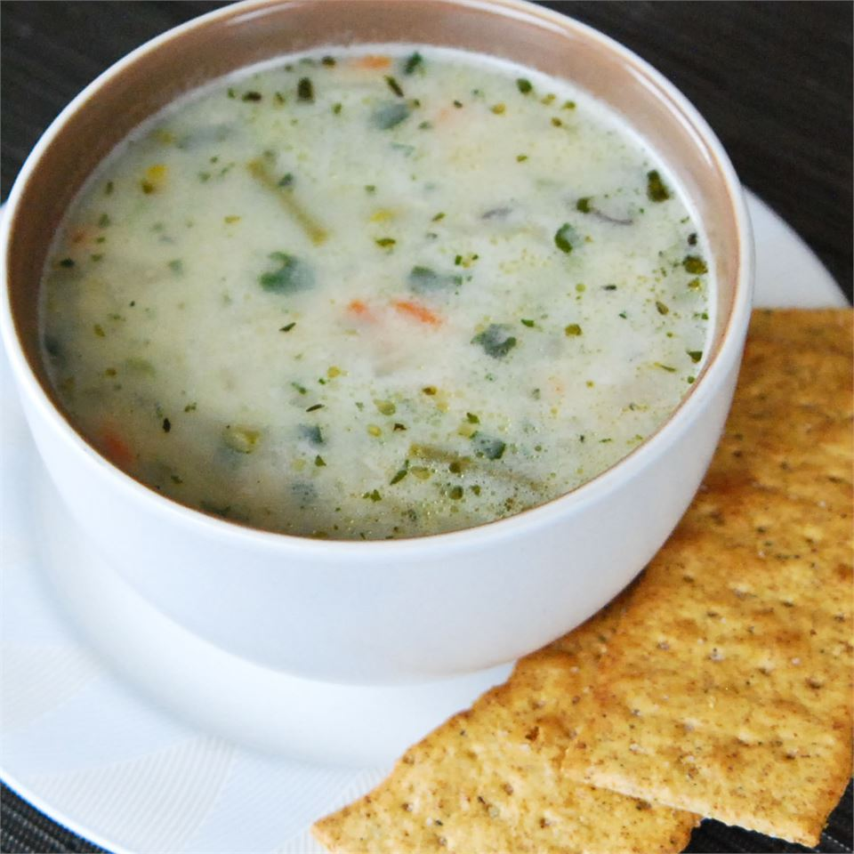

French Spring Soup

I make this during asparagus season when my husband's patch is producing a lot. It is very fresh tasting, and the longer it sits, the better it is.
Ingredients
- ¼ cup butter
- 1 pound leeks, chopped
- 1 onion, chopped
- 2 quarts water
- 3 large potatoes, chopped
Steps
- Melt the butter in a large pot over medium heat. Stir in the leeks and onion, and cook until tender.
- Pour water into the pot. Mix in potatoes, carrots, asparagus, and rice. Season with salt. Bring to a boil, reduce heat, and simmer 30 minutes, until vegetables and rice are tender.
- Stir spinach and heavy cream into the soup mixture, and continue cooking about 5 minutes before serving.